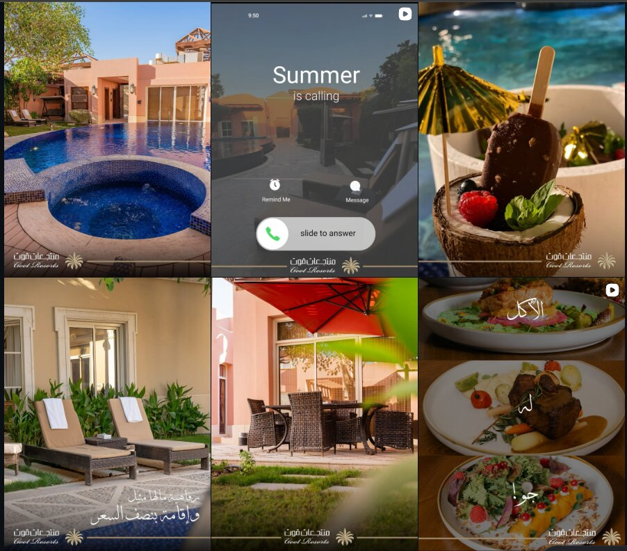

03 · Hospitality · Riyadh, Saudi Arabia
A 3% conversion rate, and the chain of small gaps behind it
Goot Resorts — a private hotel resort in Al Munsiyah, Riyadh, built for the Al Rajhi family. Bookings and lead generation, under one hard rule: no music, anywhere.

The brief, and the constraint
My focus was bookings and lead generation — every channel decision traced back to that, not to awareness for its own sake. One rule shaped everything under it: no music, anywhere, on any platform, a stakeholder preference that wasn't up for discussion, in an industry where music usually does a lot of the emotional work. I didn't treat it as a ceiling. Every video ran on nature sound, ambient noise, someone talking, humming — never an instrument. The restriction became a texture to work with, not a wall to work around.
The build
I built the brand's presence from the ground up across Instagram and Snapchat, with paid spend concentrated on Snapchat — the platform that generated the strongest leads by far. TikTok came in later and earned its own share of budget once the results justified it. Content leaned heavily on UGC and EGC, produced with freelancers, because in hospitality a guest's own footage sells harder than a produced ad ever does. Budget was set against sales-team and resort capacity each season, not a flat number — capacity moves with the season, so spend moved with it, and I monitored the CRM from the marketing side to keep leads and campaigns honest against each other.



The puzzle
Leads were healthy. Conversion wasn't. I tested everything a media buyer can test — price stated in the ad, price left out, different CTAs, different creative directions — and the number didn't move. Whatever was broken wasn't upstream, in the ads. It was somewhere downstream, where I couldn't see yet.
The investigation
The CRM only gave me a lead's outcome and a short agent comment — not enough to diagnose anything. I asked management for access to the actual sales calls, and got it. I gave myself a standing weekly task: sample the calls and listen for the full loop — what the guest actually wanted, how our team opened, the tone, whether the guest left satisfied. I found a real weakness in how sales handled the call. I proposed a training plan — script, soft skills, documentation, CRM hygiene — and supervised it myself, alongside close, ongoing monitoring of the WhatsApp conversations, with weekly reports and recommendations back to management. Conversion improved. Not to where it needed to be.
The site visit
So I went to Riyadh myself. I visited our own resort as a guest first — before anyone there knew who I was — then visited the main competitors the same way. The digital competitor analysis had already been done: pricing, USPs, whatever could be read from photos and messaging. It wasn't enough. Seeing the product in person, from a guest's side of the counter, showed a different gap: the location and pricing had made sense when Goot Resorts was founded — fair, for what it offered, at the time. Since then, other compounds had filled in around it, and certain operational realities I can't detail here, for the client's confidentiality, had quietly shifted the value on offer. None of that shows up in a spreadsheet of competitor prices. It shows up when you sit in the room.
The fix
From there: a push on Google reviews, a repriced offer, and a rebuilt budget split that gave TikTok real weight alongside Snapchat, plus corrected timing on the WhatsApp and SMS campaigns that had been reaching guests at the wrong moment. Conversion went from 3% — below what the industry, and our own historical bookings, supported — to 20%, over a six-month plan.
The takeaway
The lesson was never "it's marketing" or "it's sales." Reviews, pricing, the sales script, campaign timing, the room itself — one broken conversion number is rarely one problem wearing a disguise.